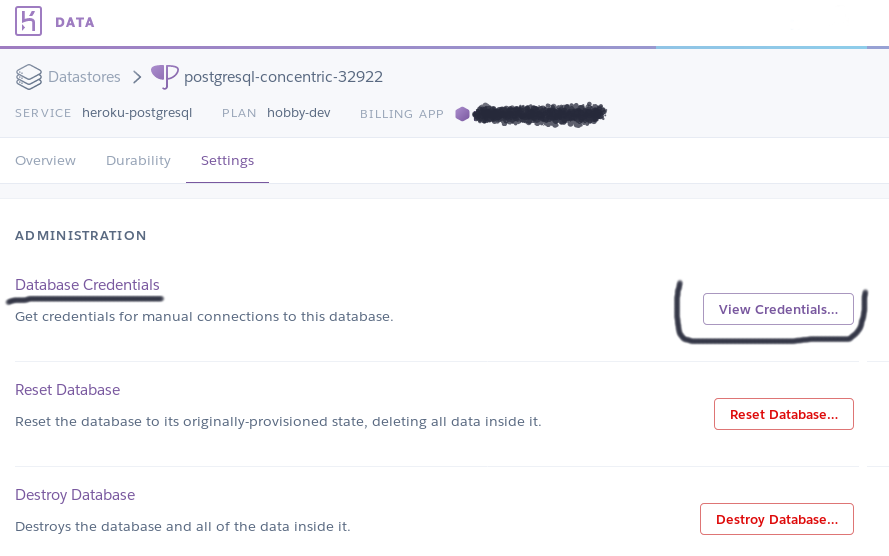
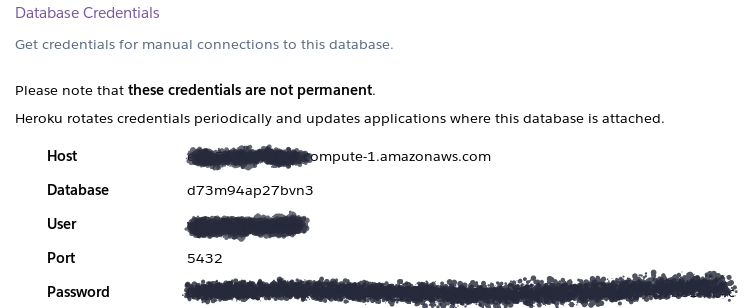
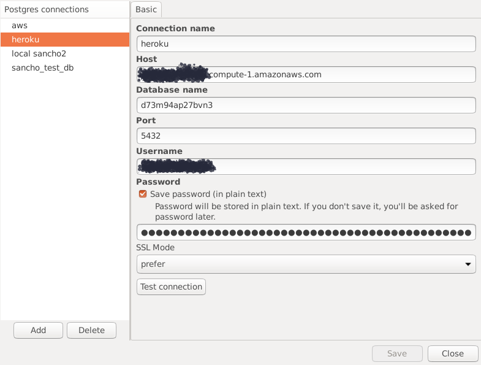

SanchoSQL can be used with a Postgres instance running on Heroku. Here’s how to do it.
Go to configuration of your Postgres add-on. Click on View credentials button.

Then, you should see credentials for your database. We’ll use them to set up a connection in SanchoSQL!

Open SanchoSQL
Select Connections (shortcut Control-N) option from the menu (File -> Connections)
Click Add button in the next window to create a new connection.

Now, you need to fill in the connection details (using the values from Heroku):
Connection name - name that describes this connection
Host
Database name
Port - 5432 by default
Username
Password
When you set all fields - you can click on the Test connection button to check if a connection can be established successfully. If you see Success - congratulations! It works as expected!